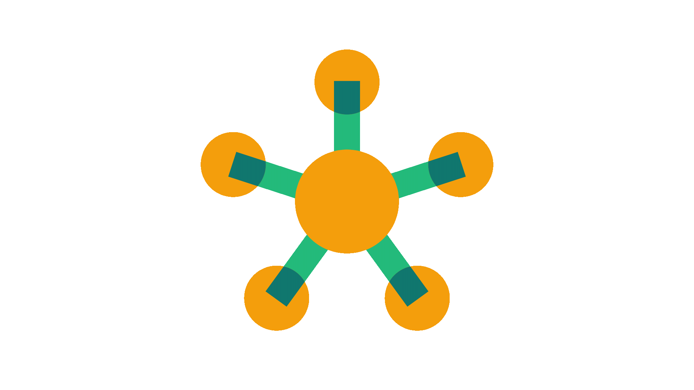

Transforming Data into
Business Decisions

Where geopolitics, data & business strategy meet
Market and Geopolitical Intelligence Analyst with 6+ years bridging political risk, sector analysis, and data science across global trade, logistics, and heavy industry — energy, mining, and raw-materials extraction. An International Relations background combined with hands-on technical depth (SQL, DAX, Python, Power BI, Google BigQuery, AWS Glue, NoSQL) turns regulatory shifts, commodity cycles, and country-risk signals into corporate intelligence and due-diligence-grade analysis for decision-makers operating across borders. Track record includes leading an internal intelligence initiative that converted raw data into strategy, driving a 374% gross profit increase ($1.9M) and 198% revenue growth through automated dashboards and sector-risk reporting. Comfortable reading government tenders, auction calendars, and policy documents across commodity supply chains, and building the data infrastructure — cloud data warehousing, workflow automation, data storytelling — that makes that reading actionable for trading houses, majors, and risk-advisory teams alike.
- Data Strategy
- Data Architecture
- Business Intelligence
- Data Science
- Geopolitical Reading
- Data Modeling

Bachalor's Dregree International Relations
UNIFESP - Escola Paulista de Política Economia e NegóciosGeopolitical & Country Risk · Political Risk Analysis · International Trade Policy · Regulatory & Compliance Analysis

Data Analysis Specialization
AluraPython for Data Analysis (Pandas, Data Cleaning & Transformation) · SQL & SQLite (Joins, Views, Transactions) · MySQL (Procedures & Functions) · Power BI (DAX, Data Modeling, Interactive Dashboards) · Statistics with Python · Data Storytelling · Data Visualization · Excel (Advanced Functions & AI-Powered Automation)
International Business Specialization
ESRI - Escola Superior de Relações InteracionaisInternational Negotiation · Cross-Border Risk & Crisis Management · Market Entry Strategy (FDI, Joint Ventures) · International Business Consulting
Coorporate Diplomacy Specialization
ESRI - Escola Superior de Relações InteracionaisCorporate Diplomacy & Stakeholder Strategy · International Finance & FX Markets · Foreign Policy Analysis Applied to Business · Investment Attraction & Paradiplomacy
.gif)
Tools I use to turn data into decisions
Power BI
DAX, Power Query, dashboards interativos
SQL
SQL Server, MySQL, BigQuery, modelagem
Python
Pandas, ETL, automação, APIs
CRM & Automação
Power Automate, RevOps, integrações
90-Day Sale & Market Intelligence Report

Tools used on this Study Case
.png)
Power BI
Pareto curve, cycle-time chart, loss breakdown, revenue consolidation, target tracking, deal table
CRM SYSTEM
Pipeline tracking, Win-rate calculation, Funnel data
Python
Chart Regeneration, Data Anonymization, Docx automation
Power Automate
Daily E-mail capture, Folder monitoring, CRM logging
Revenue Pace:
18.9% of annual target reached; current pace projects only 27% by year-end

Conversion Funnel:
2.3% of inbound e-mails convert to closed revenue (88% drop before reaching CRM)

Concentration Risk:
79.81% of revenue from one client; 88% from two service lines

Lost Revenue
$4.94M lost in 90 days — 72% from internal, controllable causes (pricing/delivery), not client decisions
Commercial Email Request Monitoring & Analysis
A pipeline to capture, clean, and analyze quotation requests received by email, built on Power Automate, Power Query, and Python.

- Continuous monitoring — automatic capture of new commercial requests, ready for bulk CRM entry.
- Historical reconstruction — full extraction of the mailbox to size request volume and feed funnel analysis.
- Reproducible ETL — turning raw data into an analytical base (client, thread, category) in both Power Query and Python.
| Layer | Tool | Function |
|---|---|---|
| Capture | Power Automate | Continuous mailbox monitoring and one-off historical capture |
| Storage | Excel Online (OneDrive) | Structured table as the raw layer of captured data |
| Transformation | Power Query + Python (pandas) | Cleaning, client extraction, categorization, and thread aggregation |
| Analysis | Power BI / Pivot Table | Consolidation of funnel metrics (volume, category, client) |
An automated, always-on flow ("Monitorar cotações - Comercial") that captures new requests as they arrive.
| Step | Action | Technical detail |
|---|---|---|
| 1. Trigger | When a new email arrives (V3) | Watches the "Commercial" folder of the personal mailbox; fires on every new item detected |
| 2. Cleanup | Html to text | Converts the email body (HTML) into plain text, stripping markup and styles |
| 3. Filter | Condition (OR) | Checks whether the subject or body contains keywords: quotation, budget, proposal, price |
| 4. Persistence | Add a row into a table | Writes Date, Sender, Subject, Body, Source, and ConversationId to an Excel table on OneDrive |
The trigger points to a personal folder ("Commercial"), populated by an Outlook rule that automatically moves messages from the commercial list — avoiding the need for shared-mailbox access.
A manual, on-demand flow ("Histórico - Comercial") used to backfill the base with retroactive data, so analysis could start without waiting months for organic capture from Flow 1.
| Step | Action | Technical detail |
|---|---|---|
| 1. Trigger | Manually trigger a flow | A single, on-demand run, with no automatic recurrence |
| 2. Extraction | Get emails (V3) | Searches the whole folder, no date filter, limited to 1,000 items per run |
| 3. Iteration | Apply to each | Processes each returned email individually, avoiding context duplication |
| 4. Cleanup + Filter | Html to text + Condition | Same logic as Flow 1, with coalesce() protection against emails with no body |
| 5. Persistence | Add a row into a table | Writes to the same table used by daily monitoring, unifying history and ongoing capture |
| Step | Transformation applied |
|---|---|
| Deduplication | Removes identical rows (sender + subject + date), which can arise from overlap between daily monitoring and historical extraction |
| Client extraction | Splits the sender's email at the @ delimiter, isolating the domain as the client identifier |
| Thread identification | Groups by ConversationId (Outlook's native identifier), more reliable than comparing subject text |
| Type classification | The first message in a thread is flagged "New Request"; subsequent ones as "Update" |
| Categorization | Keyword-based classification into Quotation, Technical Proposal, or Other |
| Aggregation | Consolidation by thread: request date, last update date, negotiation duration, and interaction count |
- Power Automate over Microsoft Graph API — the initial Python + MSAL + Graph API approach required Entra ID admin approval (Mail.Read), creating a blocking dependency. Power Automate sidestepped this because the Office 365 Outlook connectors already had pre-approved consent on the tenant.
- Keyword classification over AI (AI Builder) — AI Builder showed configuration instability and depended on Power Platform capacity credits; keyword filtering was kept for this phase.
- Grouping by ConversationId over subject text — normalizing subject text (stripping RE:/RES:/FW:) is fragile across language and formatting variations; the native ConversationId solves this deterministically.
- Manual over automatic pagination — "Get emails (V3)" exposes no native pagination above ~1,000 items; extraction was capped at 1,000 items (~99.8% of the mailbox) instead of building a manual pagination loop, prioritizing maintainability.
After ETL and thread grouping, the historical extraction identified dozens of distinct commercial requests, categorized by type and tied to the client's email domain — a structured base to answer volume, category, and client concentration on an ongoing basis, without manual effort.
- Semantic classification via AI Builder or a language model, replacing keyword filtering
- Automatic extraction of the requester's name and company from the email signature
- Migrating the analysis layer to Power BI, linked to the CRM, with average time-to-proposal calculated
- SQL-based ETL for more scalable consolidation and querying of requests
- A machine learning model to classify email intent, replacing the thread-based heuristic
One Source of Truth: CRM + Pricing Spreadsheets
A Python + SQL pipeline that unifies the daily CRM history and ~80 pricing spreadsheets into a single database — so Power BI only presents data instead of processing it.
Before
- Power Query reopening Excel files on every refresh
- Heavy DAX columns built on EARLIER and CONCATENATEX
- The same business rule repeated in several places
- No key linking a CRM deal to its cost spreadsheet
After
- One SQL base with both sources, refreshed by one command
- All row-level logic in Python/SQL; one-line DAX measures
- Each rule lives in exactly one place — a CSV or a SQL view
- Deals and proposals linked by a shared business key
Excel
Daily CRM snapshot via Power Automate + ~80 .xlsm pricing sheets
Python
Columns by name, dates, time zone, duplicates, reconciliation
SQLite
Official base, SQL views, quality and run-log tables
Parquet
10 typed, columnar tables shaped as a star schema
Power BI
Reference hub, drill-through, one-line measures
atualizar.py
One orchestrator runs the 8 steps in order, stops at the first error and logs every run — full mode when new spreadsheets arrive (~7 min), CRM-only mode (~10 s) for the scheduled daily run.
01 transformarCost tabEvery item of every pricing sheet, current revision only02 factorsPricing summaryPrice, cost and FX fields read as a form03 carregarLoad + viewsTables and SQL views into the official base04 catalogoSales catalogueGenerated without cost or margin columns05 prova_realReconciliationItem totals vs. each sheet's own summary06 ingest_crmCRMCleans snapshots, extracts the business key07 referenciaBridgeReference hub linking deals and proposals08 goldGold exportStar schema to Parquet, swapped atomicallyThe first script wrote nothing: it only inventoried every sheet — columns, types, date ranges and where the key appeared. Everything below came out of that inventory.
Silently swapped day and month
A few dates showed up "in the future". Hypothesis: the flow wrote dd/mm/yyyy as text and US-locale Excel converted it to a date only when the day was ≤ 12 — swapping day and month. When the day was > 12, the text survived. That is testable:
Time zone and duplicate snapshots
Snapshots are written overnight in UTC, which falls on the previous day in local time. Converting to local time and keeping one snapshot per deal per day removed ~1,900 duplicate rows.
Key false positives
A probability band (25 - 50%) matched the reference pattern. Extraction was restricted to the deal name, where the key appears in 140 of 142 deals.
Cost × price reconciliation
An earlier version counted group subtotals as items and doubled the markup. With explicit group-row rules, reconciliation matches 74 of 75 proposals; the exception is a known scenario issue inside that spreadsheet.
Business key over system ID
The internal proposal reference (YY-NNN) is the only thing both sources share — normalized with the same regex on both sides.
A hub against many-to-many
One reference can have several deals (handover copies, auction lots) and revisions. A reference dimension in the middle lets every fact link 1:N.
Percentages don't add up
The base ships numerator and denominator — never a pre-divided margin — so DIVIDE(SUM, SUM) stays right under any filter.
Exceptions become a list
The pipeline never hides a problem nor stops on an expected case: a six-level worklist separates real gaps from normal states.
Confidentiality by model
Cost and margin stay in a restricted model; sales gets a catalogue generated without them. Hiding a column doesn't protect data.
SQLite + Parquet
No server or IT approval (the ODBC driver was blocked); typed columns reach Power BI as-is and port to BigQuery, Athena or Fabric.
# Same rule on both sides: "26-70", "26 - 070", "NBH-26-070" → "26-070" PADRAO_REF = re.compile(r"(?<![\d:])(2\d)\s*[-–]\s*(\d{1,3})(?![\d:])") def normalizar(texto): m = PADRAO_REF.search(str(texto)) return f"{m.group(1)}-{int(m.group(2)):03d}" if m else None
Built on real work data. No client names, deal values or margins are shown here.
Career timeline
Nari Brasil Holding
2026 - Market Intelligence Analyst
Deliver strategic market intelligence helps the organization navigate competitive landscapes and consumer behavior through in-depth data analysis.
Bridge the gap between raw data and business strategy by integrating data management, data architecture, and advanced analytics with marketing insights.
Perform market research, develop competitive intelligence, and build Power BI performance dashboards to support executive decision-making.
Manage data assets, architect scalable data solutions, and apply data science techniques to support marketing operations.
Convert market uncertainty into strategic clarity by building a solid, scalable, data-driven foundation for organizational planning.
COLI Shipping & Transport do Brasil
2023 - 2026: Sales Executive & Market Intelligence Analyst
Orchestrated data strategies that drove a 374% gross profit increase ($1.9M) and 198% revenue growth by developing automated Power BI dashboards for real-time KPI monitoring.
Streamlined executive decision-making through monthly data storytelling reports, aligning international pricing strategy with macroeconomic trends and cargo demand.
Led strategic commercial operations for global heavy machinery manufacturers and trading firms, specializing in the China–Brazil trade lane and high-value project cargo cycles.
Designed and led a proprietary market intelligence project applying International Relations methodologies and investment analysis to track global trade flows, using Pipedrive CRM and Skychart to convert raw data into high-value sales leads.
Managed end-to-end CRM-based project tracking to monitor team productivity, account adherence, and feasibility, ensuring commercial efforts stayed aligned with strategic goals and operational capacity.
Get in contact
Always glad to talk shop, sector trends, data pipelines, or where geopolitics and commodities intersect. If something here resonates with a role you're hiring for, or you just want to compare notes, reach out.